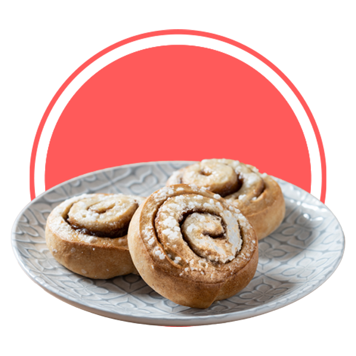

Rolls de Canela
Esta receta de Rollos de canela, es fácil de hacer y quedan exquisitos. Es una receta que toma un poco de tiempo en preparar por los tiempos de reposo, pero el resultado es espectacular y vale muchísimo la pena.
- 150mL de leche entera
- 6g de levadura
- 50g azúcar blanca
- 450g harina de trigo
- 80g mantequilla derretida
- 1 huevo
- Una pizca de sal
- Masa
- 110g azúcar morena
- 3 cucharadas de canela en polvo
- 60g mantequilla
- Relleno
- 60g mantequilla
- 100g queso crema
- 130g azúcar glass
- Frosting
- 120 ml de Crema de leche (caliente)
- Extra
- En primer lugar, mezcla en un bol 150mL de leche entera templada (caliéntala 10s en el microondas si es leche natural y unos 25s si la tenías fría en la nevera) con 6g de levadura seca de panadería y 50g de azúcar blanco. Una vez bien mezclado, deja que esto repose unos 5 minutos para que la levadura se active.
- Mientras la mezcla reposa, irás añadiendo en otro bowl lo siguiente: 450g de harina de trigo, 80g de mantequilla derretida, 1 huevo y una pizca de sal.
- Pasados los 5 minutos, echa el contenido del primer bowl en este segundo, y mézclalo todo hasta que todos los ingredientes se integren correctamente y obtengas una masa uniforme.
- Cuando la masa esté unificada y se vea moldeable, sácala del bol y ponla en una mesa para amasarla correctamente. Te recomiendo que la amases durante unos 7-8 minutos hasta que la consistencia sea parecida a la de las imágenes.
- Cuando tengas la masa lista, deja que repose en un bowl tapada con papel film o con un trapo durante 1 hora aproximadamente, a temperatura ambiente. Mientras la masa del rollo de canela reposa, vamos allá con el relleno.
- Masa
- Para el relleno del Rollo de Canela, mezcla en un bowl 110g de azúcar moreno y 3cp de canela en polvo.
- Además, ves dejando a temperatura ambiente 120g de mantequilla. Para el relleno solo usaremos 60g, pero los otros 60 los utilizaremos en el frosting y en ambos casos necesitamos que la mantequilla no esté fría.
- Relleno
- Estira la masa con un rodillo e intenta darle una forma rectangular.
- Una vez la masa esté estirada, extiende los 60g de mantequilla por toda la superficie de la masa (por eso era necesario que estuviera a temperatura ambiente, para que se pudiera esparcir sin problemas).
- Encima de la capa de mantequilla, añade la mezcla de canela y azúcar moreno. Fíjate de que quede bien repartida y uniforme.
- A continuación, enrolla la masa sobre sí misma. De nuevo, hazlo con cuidado, despacito y sin apretar mucho.
- Divide el rollo gigante en 9 piezas y córtalas con un cuchillo. Nosotros utilizamos un cuchillo de sierra, el típico cuchillo de cortar pan
- Montaje de los Rolls de Canela
- Tras 1 hora de haber dejado la masa reposando, es el momento de preparar los rollos de canela.
- Coloca los trozos de rollos de canela dulces en una bandeja y deja que reposen 30 minutos. Verás como se crecen un poco y cogen un mejor aspecto, estarán mucho más esponjosos. Mientras reposan, precalienta el horno a 180ºC con calor arriba y abajo.
- Pasados los 30 minutos y antes de hornearlos, añade 120mL de crema de leche caliente en la bandeja donde están los Tollos de Canela. Echa la crema de leche por encima y entre los huecos de los rollitos de canela.
- Hornea los rollos de canela durante 30 minutos a 180ºC.
- Mientras se hornean, prepara el frosting de los rollos de canela mezclando en un bowl: 60g de mantequilla a temperatura ambiente, 100g de queso crema y 130g de azúcar glas.
- Cuando los rollos de canela estén horneados, añade todo el frosting que ya preparaste por encima y deja que repose otros 30 minutos, así se asentará el frosting y los propios rollos de canela.
- ¡Listo! ahora a disfrutar de esta maravillosa receta
- Horneado